UAS Rules and Regulations
GIS595-004/603; MEA592-006/601:
UAS Mapping for 3D Modeling
Justyna Jeziorska
Center for Geospatial Analytics
North Carolina State University
Objectives
- Understand the role of the Federal Aviation Administration (FAA) in ensuring safety in National Airspace System (NAS);
- Recognize 3 main types of UAS operations and distinguish between them;
- Name the requirements for legal operations of commercial purposes in the U.S. - both in regard to the pilot and to the UAS;
- Outline safety guidelines for recreational use of UAS;
Objectives
- Know operating rules for commercial use of UAS (Part 107);
- Recognize permanent and temporary "no-drone-zones" and knows where to find information about them;
- Understand the role of Certificate of Authorization and the process of obtaining it;
- Recognize whan the educational use of UAS can be classified as recreational and when commercial
Federal Aviation Adminiostration (FAA)
- Created in 1958 in response to a series of fatal accidents and midair collisions involving commercial aircraft;
- Mandated to develop plans and policies for the use of navigable airspace to ensure the safety of aircraft and the efficient use of airspace;
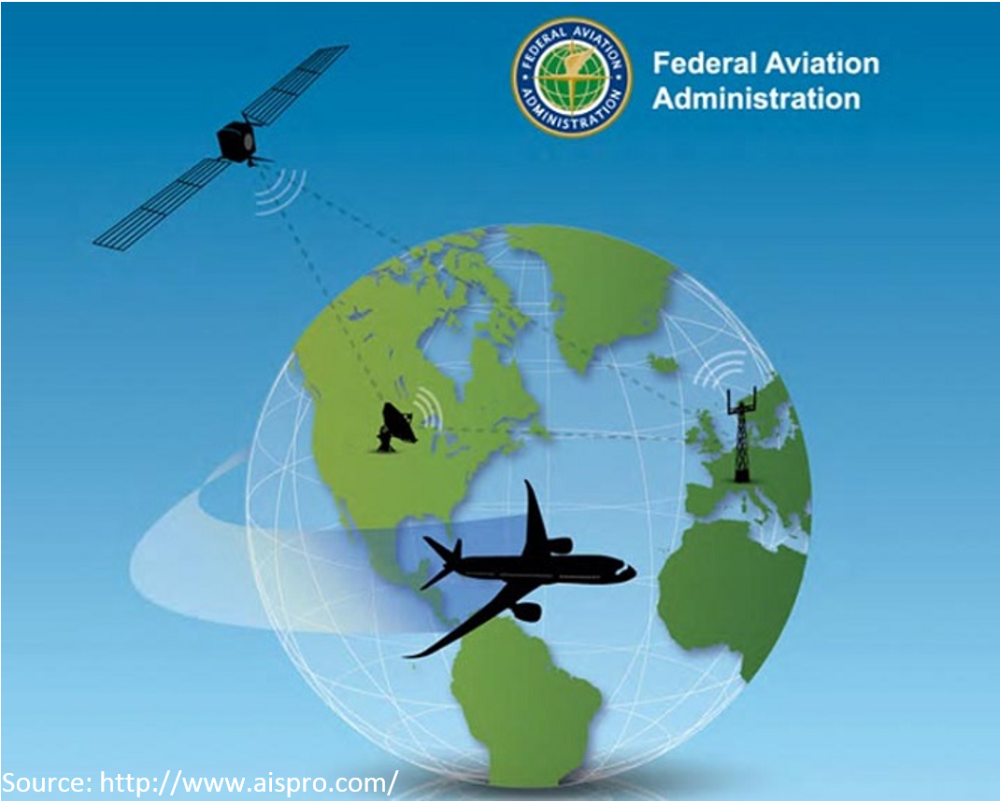
- Since the creation of the FAA, American airspace has become one of the most regulated fields in the United States.
National Airspace System (NAS)
- Already congested with piloted aircraft, and adding a swarm of UAVs requires thoughtful planning;
- Main mandate - to ensure that UASs do not endanger current users of the NAS (including manned or other unmanned aircraft) nor compromise the safety of the people and property on the ground
- When it comes to the safe operation and integration of the UAS into the NAS, one of the main concern that the FAA has is the lack of detect-sense-and avoid capability of the current UAS technology
Types of UAS operations
- FAA distinguishes 3 main types of operations
- Different rules apply for legal operations of UAS depending on the type of UAS operations

- Additional type - educational use can be considered as recreational or commercial
Recreational use of UAS
- The recreational use of sUAS is the operation of an unmanned aircraft for personal interests and enjoyment.
- using a sUAS to take photographs for your own personal use would be considered recreational;
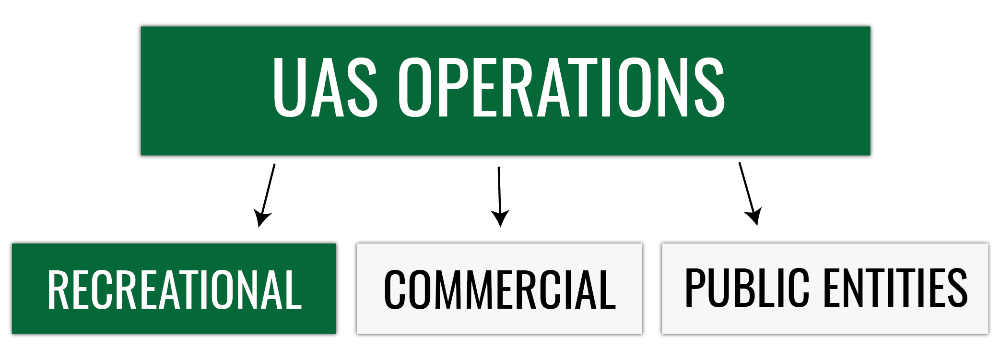
- using the same device to take photographs or videos for compensation or sale to another individual would be considered a commercial operation.
Recreational use
- safety guidelines
- Follow community-based safety guidelines, as developed by organizations such as the Academy of Model Aeronautics (AMA)
- Fly no higher than 400 feet and remain below any surrounding obstacles when possible.
- Keep your sUAS in eyesight at all times, and use an observer to assist if needed.
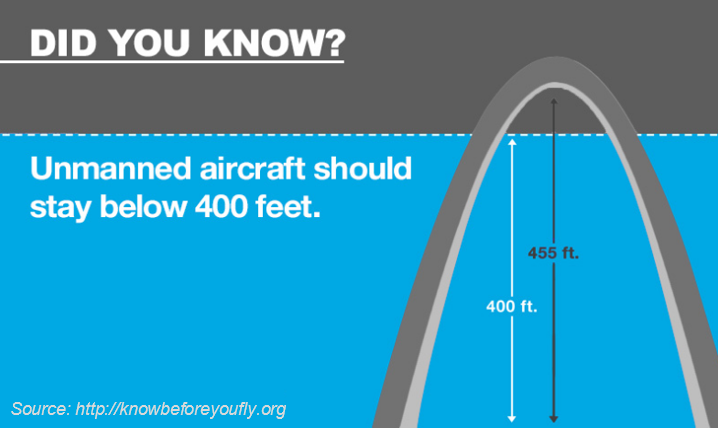
Recreational use
- safety guidelines
- Remain well clear of and do not interfere with manned aircraft operations, and you must see and avoid other aircraft and obstacles at all times.
- Do not intentionally fly over unprotected persons or moving vehicles, and remain at least 25 feet away from individuals and vulnerable property.
- Contact the airport and control tower before flying within 5 miles of an airport
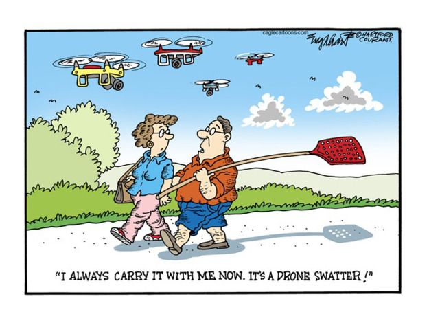
Recreational use
- safety guidelines
- Ensure the operating environment is safe and that the operator is competent and proficient in the operation of the sUAS.
- Do not fly near or over sensitive infrastructure or property such as power stations, water treatment facilities, correctional facilities, heavily traveled roadways, government facilities, etc.
- Do not fly in adverse weather conditions such as in high winds or reduced visibility.
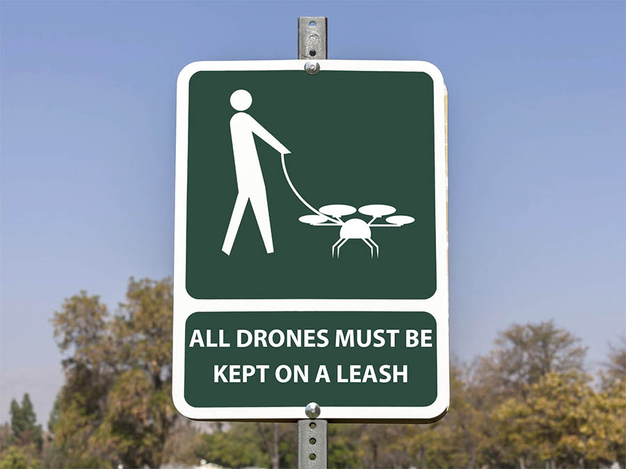
Recreational use
- safety guidelines
- Check and follow all local laws and ordinances before flying over private property.
- Do not conduct surveillance or photograph persons in areas where there is an expectation of privacy without the individual’s permission (see AMA’s privacy policy).
- Do not fly under the influence of alcohol or drugs
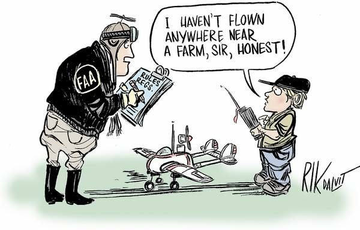
Commercial use of UAS
Any commercial use in connection with a business, including:
- Selling photos or videos taken from a UAS
- Using UAS to provide contract services, such as industrial equipment or factory inspection,
- Using UAS to provide professional services, such as security or telecommunications,
- Using UAS to monitor the progress of work your company is performing.
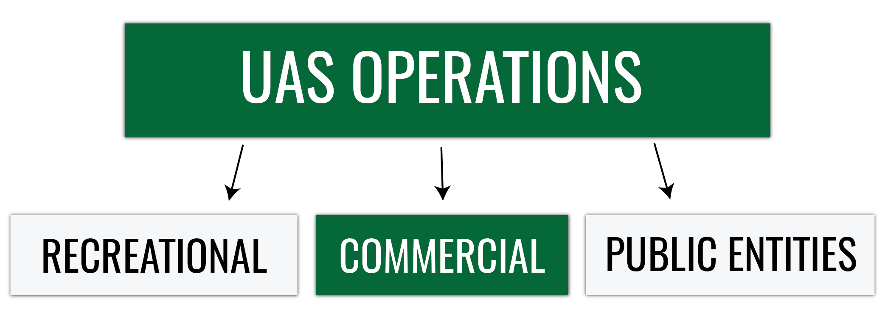
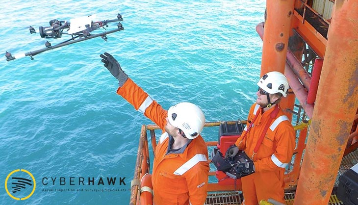
Commercial use
- Remote Pilot requirements
- Must be at least 16 years of age
- Must hold a remote pilot airman certificate with a small UAS rating or be under the direct supervision of someone holding a remote pilot airman certificate
- Must pass the applicable Transportation Security Administration (TSA) vetting
- How to obtain a Remote Pilote Airman Certificate (video)
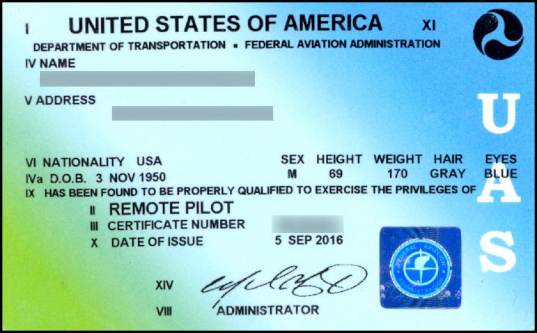
Remote Pilot Certificate
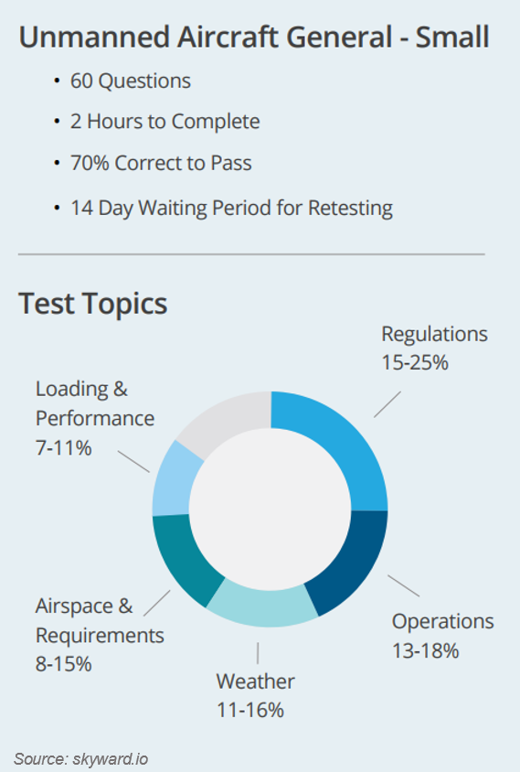
Commercial use
- UAS requirements
- Must weight less than 55 lbs.
- Must undergo pre-flight check by remote pilot in command (or the person supervising the operation)
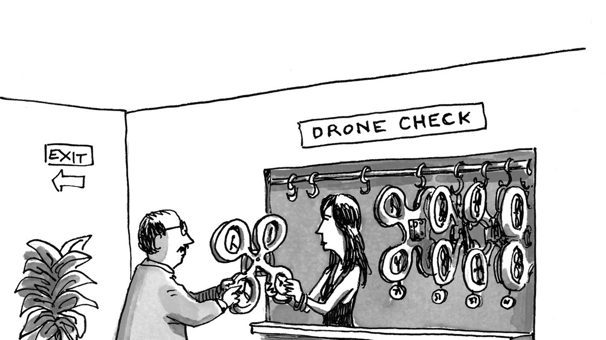
- The U.S. Court of Appeals for the District of Columbia Circuit invalidated the registration requirement with the decision from May 19th 2017
- The registration requirement is back on since 12/13/2017
Commercial use
- location requirements
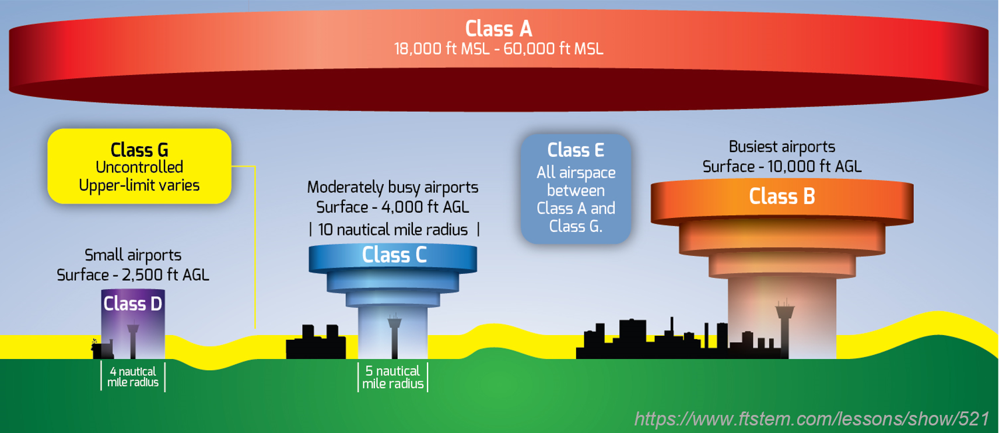
- Class B/C/D May operate with permission from local Air Traffic Control
- CLASS E/G – May operate while following all other regulations
Commercial use
- location requirements
Easy way to remember main elements
- Solid line – higher class, dashed line – lower class
- Blue line – higher class, magenta line – lower class
This translates to:
- Solid blue – class B, Solid magenta – class C
- Dashed blue – class D, Dashed magenta – class E
Commercial use
- operating rules
- Must fly under 400 feet above ground level (AGL) or, if flying at an altitude higher than 400 feet AGL, stay within 400 feet of a structure.
- Must not fly from a moving vehicle unless you are in a sparsely populated area
- Must fly at or below 100 mph
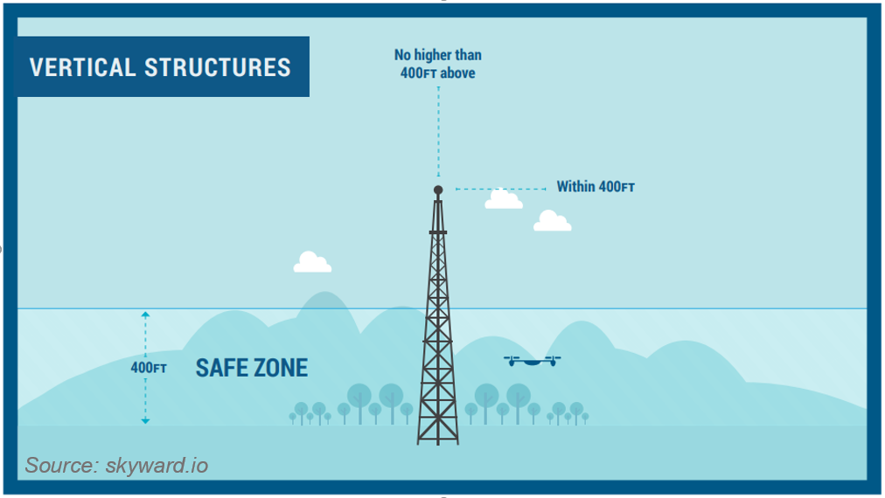
Commercial use
- operating rules
- Must fly during daylight hours or civil twilight hours (30 minutes before official sunrise to 30 minutes after official sunset, local time) with appropriate anti-collision lighting
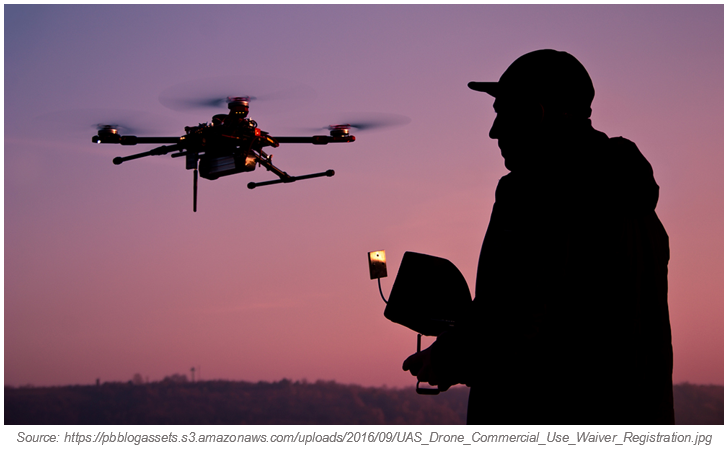
- Must yield right of way to manned aircraft
Commercial use
- operating rules
- Must keep the UAS in sight (i.e. visual line of sight), either by the remote pilot in command or a visual observer
- Must not fly over people
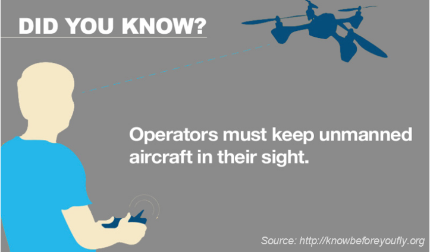
Waivers from operating rules
for commercial use of UAS
- If you want to operate UAS for commercial purposes outside of these rules, you may apply for a certificate of waiver.
- The FAA will grant waivers if operation can be performed safely but may otherwise not be allowed under Part 107.
Waivable sections of part 107
- Operation from a moving vehicle or aircraft (§ 107.25)*
- Daylight operation (§ 107.29)
- Visual line of sight aircraft operation (§ 107.31)*
- Visual observer (§ 107.33)
- Operation in certain airspace (§ 107.41)
- Yielding the right of way (§ 107.37(a))
- Operation of multiple small unmanned aircraft systems (§ 107.35)
- Operation over people (§ 107.39)
- Operating limitations for small unmanned aircraft (§ 107.51)
- No waiver of this provision will be issued to allow the carriage of property of another by aircraft for compensation or hire
Waivable sections of part 107
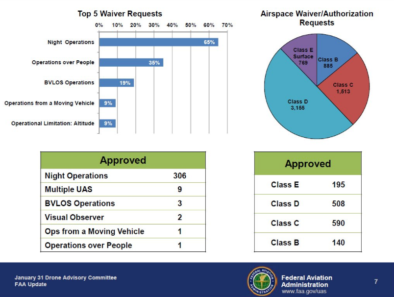as of January 2017
Accident Reporting (§ 107.9)
No later than 10 days after an operation (...) a remote pilot in command must report to the Federal Aviation Administration in a manner acceptable to the Administrator, any operation of the small unmanned aircraft involving at least:- Serious injury to any person or any loss of consciousness; or
- Damage to any property, other than the small unmanned aircraft, unless the cost of repair (including materials and labor) or fair market value of the property does not exceed $500
Where NOT to fly
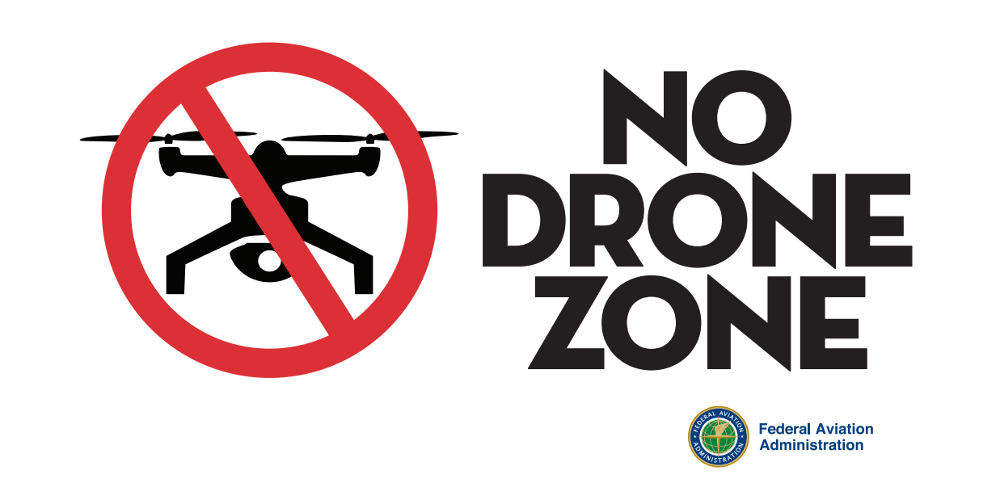Airspace restrictions
- Security Sensitive Airspace Restrictions
- Temporary Flight Restrictions (TFRs)
- Restricted or Special Use Airspace
- Stadiums and sporting events
- Wildfires
- Airports
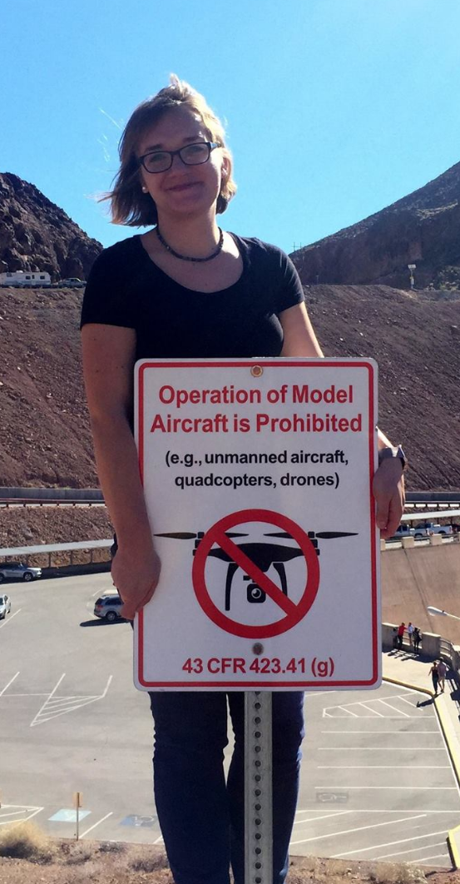
Security Sensitive Airspace Restrictions
- Prohibited all UAS flights within the airspace
- Restrictions extend from the ground up to 400 feet AGL,
- Apply to all types and purposes of UAS flight operations,
- Remain in effect 24 hours a day, 7 days a week.

Temporary Flight Restrictions
- TFR - area of airspace where air travel is limited because of a temporary hazardous condition, such as a wildfire or chemical spill; a security-related event
- TFR contains the details about the restriction (size, altitude, time period that it is in effect, and what types of operations are restricted and permitted)
Restricted or Special Use Airspace
Types of Special Use Airspace include:
- Prohibited areas
- Restricted areas
- Warning areas
- Military operation areas (MOAs)
- Alert areas
- Controlled firing areas (CFAs)
The airspace surrounding Washington DC is the most restricted in the country
more info
Stadiums and sporting events
- UAS operations are prohibited within a radius of 3 nautical miles of the stadium or venue of:
- Major League Baseball
- National Football League
- NCAA Division One Football
- NASCAR Sprint Cup, Indy Car, and Champ Series races
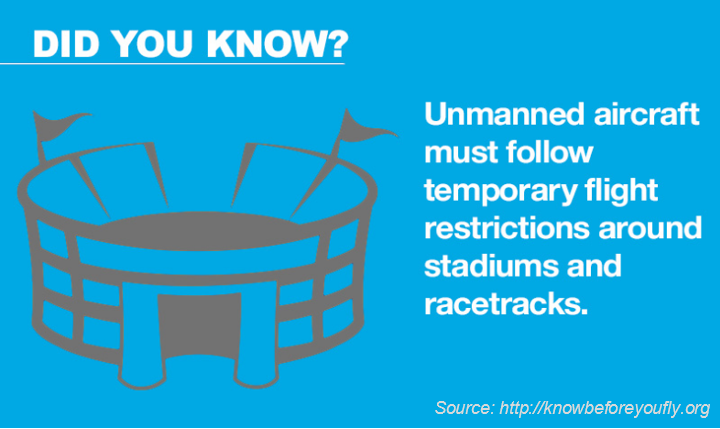
More info in
handout on sports TFRs
Wildfires
It is illegal to fly your UAS in or around a wildfire firefighting operation
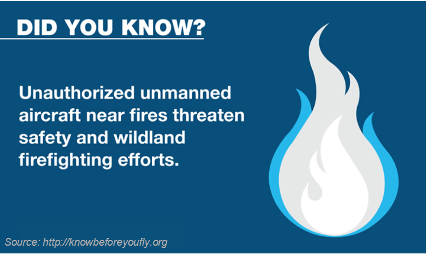
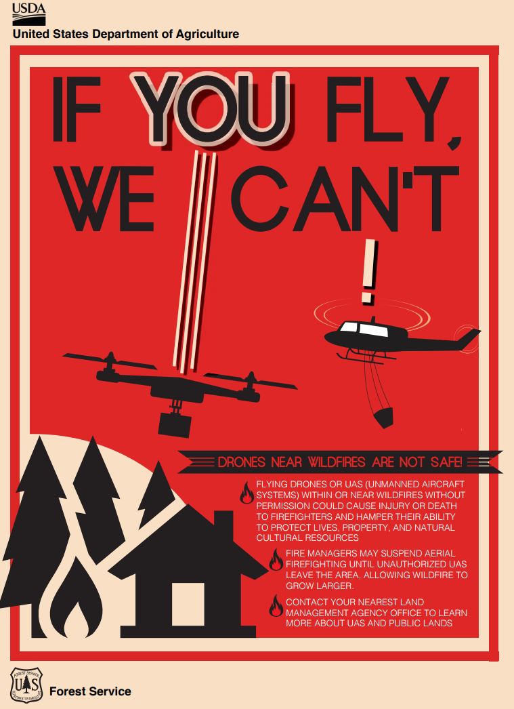
Airports
- Recreational operators are required to give notice for flights within 5 miles of an airport to both the airport operator and air traffic control tower, if the airport has a tower.
- Recreational operations are not permitted in Class B airspace around most major airports without specific air traffic permission and coordination
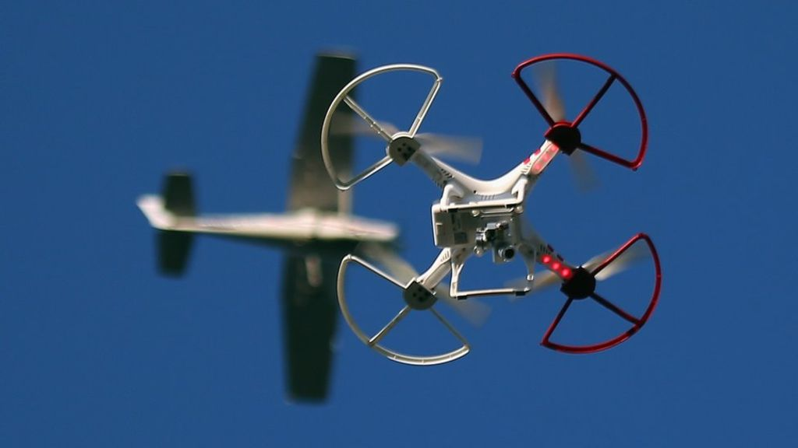
Public Entities
Publicly funded university, law enforcement agency, fire department, or any other federal or state government agency have
TWO OPTIONS:
- Follow the same requirements and operating rules for business users (known as “Part 107”).
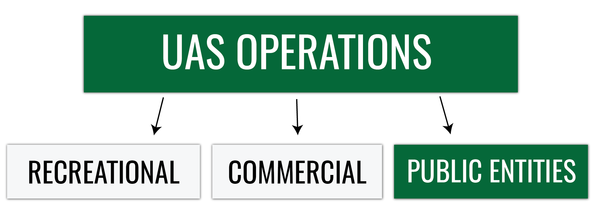
OR
- Operate UAS for a government entity outside of these rules, you may apply for a blanket public Certificate of Authorization (COA)
Certificate of Authorization
Can be obtained:
- Only by government entities – such as federal and state government agencies, law enforcement agencies and public colleges and universities
- Only for public (governmental) UAS aircraft operations
Allows:
- flights at or below 400 feet in Class G airspace nationwide,
- self-certification of the UAS pilot
- the ability to obtain emergency COAs under special circumstances.
Certificate of Authorization
- COAs are issued for a specific period of time, usually two years,
- include special provisions unique to each proposal, such as a defined block of airspace and time of day sUAS can be used
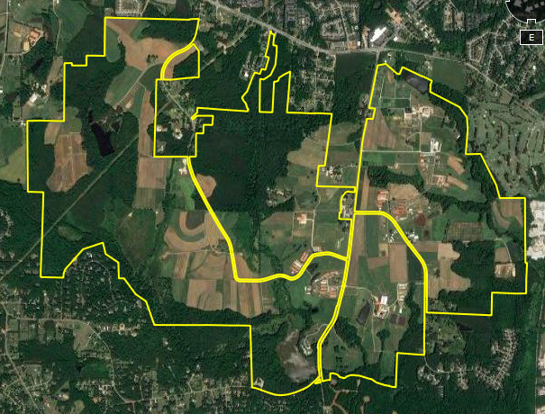
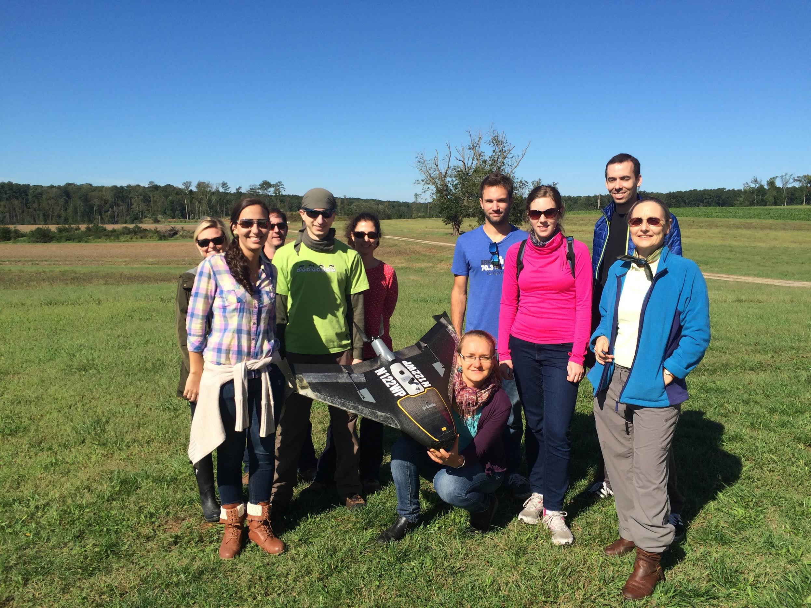
How to apply for COA?
- Since 2009, the FAA has taken steps to streamline the application process by transitioning online
- Visit the FAA website for more information on how to apply for a COA online
- The average COA processing time is less than 60 days
- Expedited authorization is available in emergency and life-threatening situations
- Sample COA Application
Educational use
- New legal interpretation from the FAA (May 5, 2016), the use of UAS by students in accredited education institutions as part of their coursework will be allowed under recreational guidelines for model aircraft
- This does not apply to research efforts, which would too closely link operation of the UAS to faculty members’ professional duties and compensation.
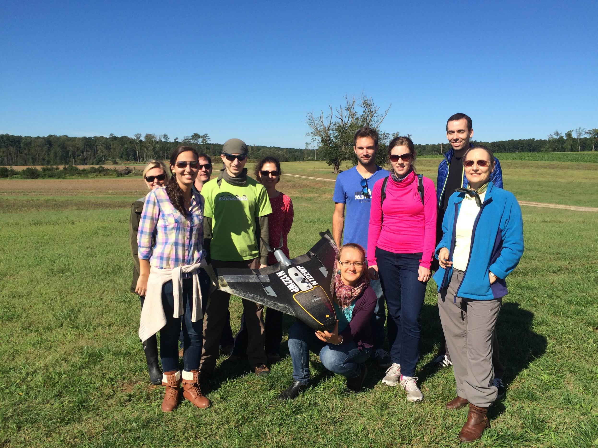
UAS best practices
- If you can, tell other people you’ll be taking pictures or video of them before you do so
- If someone has a reasonable expectation of privacy, don’t violate it by taking pictures, video, unless you’ve got a very good reason.
- Don’t fly over other people’s private property without permission if you can easily avoid doing so.
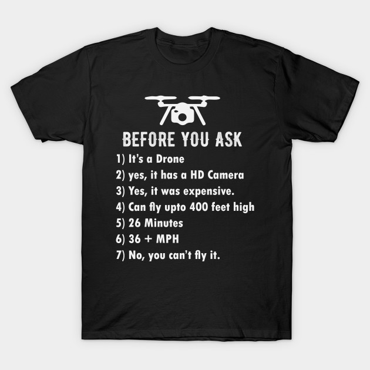
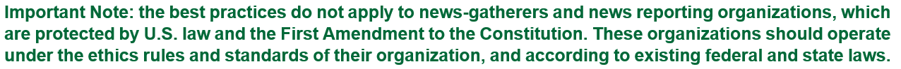
UAS best practices
- Don’t gather personal data for no reason, and don’t keep it for longer than you have to.
- If you keep sensitive data about other people, secure it against loss or theft.
- If someone asks you to delete personal data about him or her that you’ve gathered, do so, unless you’ve got a good reason not to.
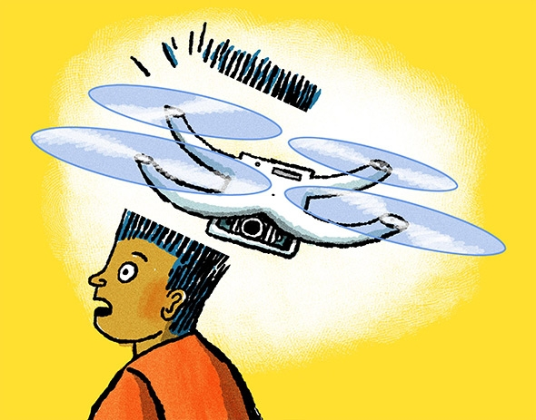
Don’t harass people with your drone.
Resources
- U.S. Air Space map
- Know Before you Fly website
- Register your drone
- Operating UAS in North Carolina
- Are you ready to fly a drone?– quiz
- Aviation Weather Center
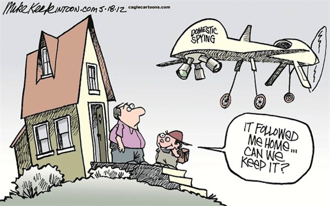